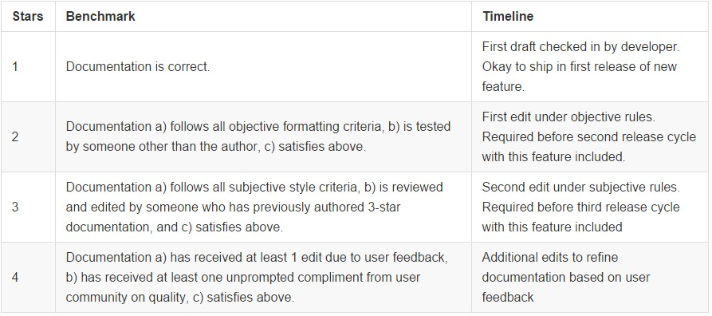

Documentation Conventions¶
The most important thing about documentation is getting it done and out to the community.
After that, we can work on upgrading the quality of documentation. The below chart summarizes the different levels of documentation and how the quality gates are applied.
Note: Documentation Guidelines are new, and iterating. Documentation has started to balloon and this is our attempt at reducing ambiguity and increasing consistency, but the conventions here are very open to discussion.

1-Star Requirements: Correctness¶
List precise dependencies¶
- Be explicit about what specific dependencies have been tested as part of an installation procedure.
- Be explicit about assumptions of compatibility on systems that have not been tested.
- Do not claim the system works on later versions of a platform if backwards compatibility is not a priority for the dependency (It’s okay to say Chrome version 43 and higher, but not Python 2.6 and higher, because Python 3.0 is explicitly incompatible with previous versions).
Correct¶
This procedure works on an Ubuntu 14.04 server with Python 2.6 installed and should work on compatible Linux-based operating systems and compatible versions of Python.
Incorrect¶
This procedure works on Linux servers running Python.
also:
This procedure works on Linux servers running Python 2.6 and higher.
2-Star Requirements: Objective Formatting Checklist¶
Use headings¶
Headings in markdown provide anchors that can be used to easily reference sub-sections of long pieces of documentation. This is preferable to just numbering sections without headings.
Correct:¶
Step 1: Add a heading¶
This makes things easier to reference via hyperlinks
Step 2: Link to headings¶
So things are easier to find
Incorrect:¶
Step 1: Add a heading This makes things easier to reference via hyperlinks Step 2: Link to headings So things are easier to find
Use appropriate heading case¶
Cases in headings may vary depending on usage.
When to use Title Case¶
H1, H2, H3 headings should be “Title Case” and less than four words, except if a colon is used, then four words per segment separated by the colon.
These large headings are typically shorter and help with navigating large documents
When to use sentence case¶
H3, H4, H5 headings should be “Sentence case” and can be any length.
These headers are smaller and used to summarize sections. H3 can be considered either a large or small heading.
These conventions are new, so there’s flexibility around them, when you’re not sure, consider the convention here as default.
Sub-section headings should end with a colon¶
For readability and clear layout, end a sub-section heading with a colon
One instruction per line¶
It’s easy to miss instructions when they’re compounded. Have only one instruction per line, so documentation looks more like a checklist.
A support person should be able to say “Did you complete step 7?” instead of “Did you complete the second part of step 7 after doing XXX?”
Correct:¶
- For Predefined configuration look under Generic and select Docker.
- For Environment type select Single instance
Incorrect:¶
- For Predefined configuration look under Generic and select Docker. For Environment type select Single instance
End Lists Consistently¶
Full sentences in lists should end with proper punctuation. If one point in a bulleted list or numbered list ends with a period, end all points in the list with a period. If all points in the list are fragments, use no end punctuation.
3-Star Requirements: Subjective Style Guidelines¶
Be Concise¶
Try to use fewer words when possible.
Correct:¶
This integration posts issue, comment and merge request events from a GitLab repository into specific Mattermost channels by formatting output from GitLab’s outgoing webhooks to Mattermost’s incoming webhooks.
Use appropriate emphasis¶
Mention Clickable Controls in Bold, Sections and Setting Names in Italics, and Key Strokes in pre-formatted text.
To make it clear and consistent across documentation on how we describe controls that a user is asked to manipulate, we have a number of guidelines:
Bold
- Please bold the names of controls you’re asking users to click. The text that is bolded should match the label of the control in the user interface. Do not format these references with italics, ALL-CAPS or
pre-formatted text. - Use
>to express a series of clicks, for example clicking on Button One > Button Two > Button Three. - If a button might be difficult to find, give a hint about its location before mentioning the name of the control (this helps people find the hint before they start searching, if the see the name of the button first, they might not continue reading to find the hint before starting to look).
Italics
- Please italicize setting names or section headings that identify that the user is looking in the correct area. The text that is italicized should match the name of the setting or section in the user interface.
- It is helpful to use italics to guide the user to the correct area before mentioning a clickable action in bold.
pre-formatted text
- Please use
pre-formatted textto identify when a user must enter key strokes or paste text into an input box.
Correct¶
Type mattermost-integration-giphy in the repo-name field, then click Search and then the Connect button once Heroku finds your repository
Incorrect¶
Type “mattermost-integration-giphy” in the repo-name field, then click Search and then the Connect button once Heroku finds your repository